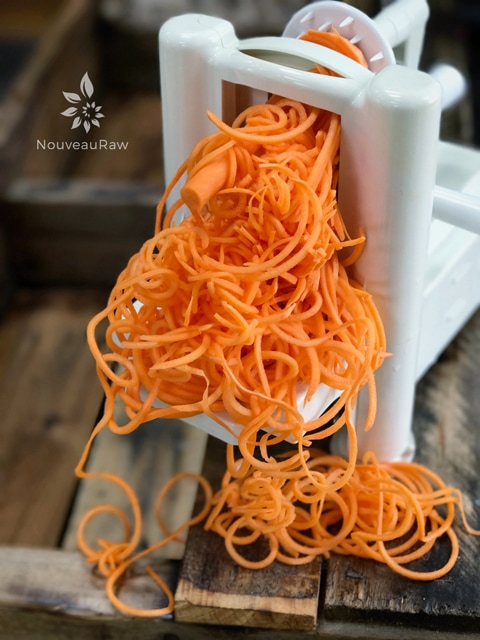

Sweet Potato Noodles

~ raw, vegan, gluten-free, nut-free, alkaline ~
Kale may be the queen of the greens these days, but sweet potatoes are the royal root veggies if you ask me… well today that is… I can’t speak for tomorrow; I most likely will be on some other veggie that has won its place in my heart. :)
After some reading here and there, I have learned that these orange-fleshed potatoes are a great source of beta-carotene. Inside the leathery jacket, you will find a good source of “vitamin A, vitamin C, manganese, calcium, potassium, iron, vitamin B6, and fiber.
Sounds good? It gets better: the sweet potato has a lower glycemic index than its cousin the “common” potato.
Sweet potato noodles pair well with chili pepper, cilantro, cinnamon, coconut, garlic, ginger, lime, nutmeg, onions, rosemary, salt, honey, thyme, walnuts, oranges, pineapple, apples, pecans, sweet spices, and maple syrup.
Can I eat them Raw?
Yes, you certainly can. Unlike regular potatoes, which contain the dangerous enzyme solanine in their raw state, sweet potatoes can actually be consumed raw. I can’t say that you would want to enjoy them as you would, let’s say… an apple since they can be difficult to digest due to an enzyme inhibitor referred to as trypsin. (1) But when eaten in smaller quantities, it’s often ok. This will partly depend on your own constitution and the state of your digestion.
If you have a weakened digestion, I would recommend heating them to 195 degrees (F) for several minutes to inactivate the trypsin inhibitors. I realize that this takes it out of the “raw state” but that’s ok. The ultimate goal is to enjoy food that gives us optimal health.
When selecting sweet potatoes look for firm ones without soft spots, cracks, or bruises. Store them in a cool, dark, well-ventilated place. They will keep for 2 to 4 weeks. Although the sweet potato should not be stored in the fridge when raw, once it has been cooked, it will keep in the fridge for about a week.
Preparation:
- Be sure to pick fresh and firm sweet potatoes. This will ensure that you get the best tasting noodles possible.
- Wash and peel the potato.
- Place the unit on the countertop and press down on the spiralizer to engage the suction cups and secure.
- Insert the blade cartridge you’d like to use, make sure that it clicks into place.
- Cut flat ends on each end of the potato.
- Place the center of the root onto the cylinder part of the blade and press the teeth of the handle into the other side of it.
- Take hold of the handle on the bottom (the horizontal one) with one hand and then spin the handle with the teeth to spiralize. Press steadily with forward pressure, using the handle that you’re gripping, for best results.
- Before dressing up the noodles, take scissors when you’re done spiralizing and cut the noodles into manageable sized pieces. Just grab a bunch of noodles and roughly snip. Or enjoy that never-ending noodle!
- You can make noodles in advance, they should keep for 5-7 days in the fridge, without sauce.
To clean the spiralizer:
- Purchase an inexpensive handled brush for cleaning the blade parts and hard to reach parts on the unit. This will save your fingers and prevent nicks from happening on the blades, keeping them nice and sharp.
- Be sure to quickly rinse the unit after creating noodles. The juices from certain root veggies can stain the unit.
- Dry the blades well before putting them away.

Tools used to create noodles:
GEFU Spiralfix Spiral Slicer
- Can be used in the left or right hand.
- 4 different widths of cut for creative recipes: Spiral cut across the entire width of the material, 3 mm, 6 mm, or 12 mm wide adjustable via adjusting wheel
- Folding lid for easy filling
- Detachable non-slip holding container for safe standing
- Material: stainless steel, ABS plastic, SAN
- Splash-guard lid with drive unit detachable for easy cleaning. Dishwasher-safe
Spiralizer 7-Blade Vegetable Slicer
- This slicer comes with 7 different blades which give you 7 completely different textures and shapes.
- Comes with 420 high carbon cutlery grade stainless steel blades and stronger making it possible to Spiralize harder root vegetables like sweet potatoes and turnips that previously broke Spiralizer handles
Potato Peeler
- Wash and peel the outer skin off of the veggie.
- Hold the veggie at one end and in a long stroke motion, run the peeler from top to bottom.
- Rotate the veggie in a circular motion and continue peeling until you reach the seeded core (if there is one). Stop once you reach this. Don’t throw it away, use it in a smoothie or salad.
© AmieSue.com